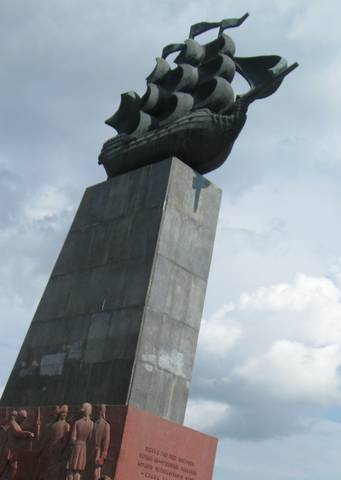
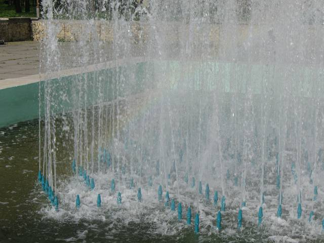
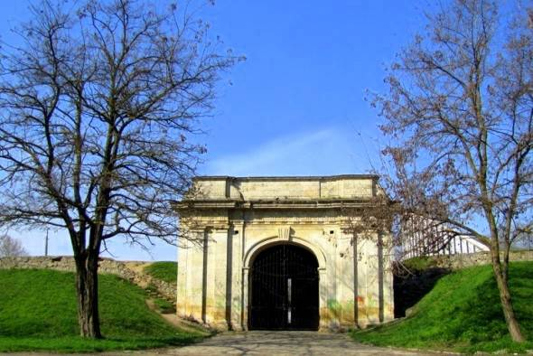
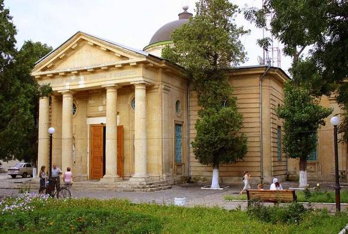
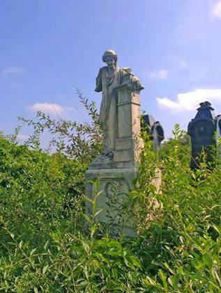
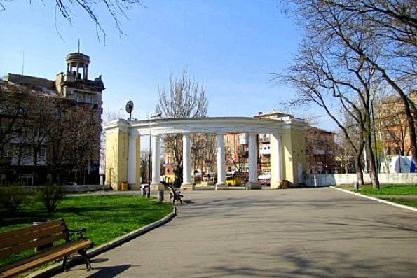
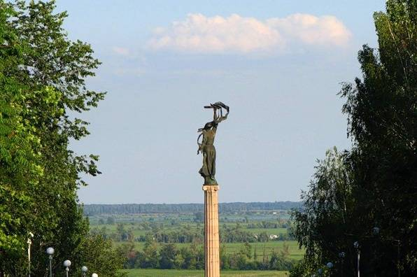
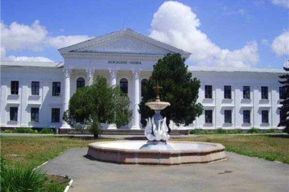
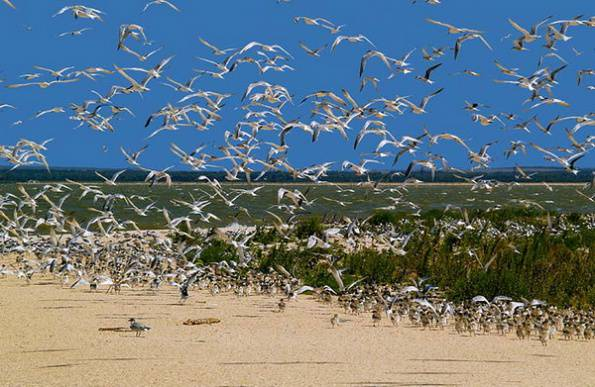

-

Фрегат
на набережной Херсона. Расположен на площади Октябрьской Да и сама набережная очень красочная, особенно с мая по ноябрь. Среди множества прогулочных яхт и катеров можно увидеть каменное изваяние первого 66-пушечного корабля Российской империи «Слава Екатерины». Тут же можно заказать речную прогулку по днепровским плавням. Сердце города, его главная пешеходная улица - улица Суворова. Улица вымощена плиткой, похожей на старинную мостовую. Летом от палящего солнца спасают деревья, создающие тень вдоль всей улицы. В ботаническом саду можно увидеть самые знаменитые здания города в уменьшенном виде. Тут же располагается миниатюрные Бранденбургские ворота, Стена плача, Парфенон, Девичья башня, Шипка, Московский Кремль. Екатерининский собор сделан как будто из песка. На территории собора находится колокольня и фортификационный колодец глубиной 78м. Из музеев Херсона в первую очередь советую посетить Художественный музей имени А. Шовкуненко и Краеведческий музей.
-

Ланшафт
Кроме всего вышеперечисленного, Херсон богат парками, в которых можно прогуляться в тени деревьев, возле фонтанов:парк им. Ленинского Комсомола, парк им. В. И. Ленина, парк славы, Приднепровский парк, парк им. Димитрова, парк Шумского
-

Херсонская крепость
Едва ли не самой главной достопримечательностью принято считать Херсонскую крепость, которая представляет собой целый комплекс построек. Ее строительство началось в далеком 1778 году по указу императрицы Екатерины II. Для возведения могущественного комплекса понадобилось огромное количество строительных материалов, которые подручными методами изготавливали рабочие из пород, добытых неподалеку. Не смотря на колоссальные финансовые затраты, крепость не обороняла город при войне. Функционировала она в качестве корпуса школы для детей военных. Современный вид постройки – это лишь часть огромного комплекса, который в большей части был разрушен и разобран в военные годы. Любителям истории стоит знать,
-

Екатерининском соборе
что на территории крепости, в Екатерининском соборе, похоронен известный полководец Григорий Потемкин. На территории соборного кладбища есть и другие захоронения, а так же шикарные надгробия, не менее известных личностей екатерининской эпохи. Туристов тут практически не бывает, а местных жителей прогуливается мало, потому можно спокойно прогуляться и осмотреть постройки, окунувшись на много сотен лет назад.
-

Херсонських некрополь
Еще одним, довольно известным памятником истории принято считать Херсонский некрополь, который находится на территории церкви Всех Святых. В самом храме есть несколько уникальных икон 17 – 18 века, но основное внимание туристы всегда уделяют именно старинному кладбищу. Старейшим памятником является надгробная плита монаха, датируемая 1781 годом. Многие памятники и надгробия этого периода выполнены в греческом стиле, а их вид просто впечатляет. Увидеть тут можно не только кресты и надгробные плиты, как это чаще всего бывает на кладбищах, но и скульптуры известных личностей, воинов, полководцев и знатных помещиков. Есть в некрополе и захоронения казаков Черноморья. Кроме этого, тут можно встретить могилы и урны испанских, польских, греческих и итальянских воинов, врачей и других выдающихся личностей. В последние несколько лет в Херсонский некрополь организуют экскурсии, ученые и историки пытаются воссоздать и реконструировать ценные памятники и надгробия. В самом центре Херсона можно увидеть множество интересных архитектурных построек разных времен. Архитектура города настолько своеобразна и необычна, что нередко можно встретить переплетение разных стилей и эпох. Например, дом учителя, построенный в татарском стиле. Ранее тут располагался учебный корпус женской гимназии, основанной одним из местных землевладельцев. По всей центральной улице расположены старинные дома, многие из них уже давно перешагнули столетний рубеж. Каждое из них имеет свою старинную историю и тайны, познакомиться с которыми можно заказав экскурсию в местном историческом музее. Само здание, как и многочисленные экспонаты, имеет большую историческую ценность для города.
-

Парк Ленина
Не забудьте заглянуть в самый старый парк херсонщины – Ленинский. Часто его упоминают, как Александровский парк, названный в честь двадцатипятилетия правления Александра II. Его строительство начал сам Потемкин в далеком 1785 году. Парк несколько раз разрушали, на его месте даже делали арену для проведения скачек. Лишь в 1869 году он был восстановлен при участии Дениса Карновича, вице – губернатора. Главной достопримечательностью является огромный дуб, который, если верить легенде, посадил еще Александр II. От дуба в разные стороны расходятся небольшие тенистые аллейки, где в теплое время года не спеша прогуливаются местные жители
-

Парк Слави
-

Фрегат
Еще одним, не менее значимым местом для горожан является парк Славы, построенный к юбилею Великой Победы На месте, где возвышается колонна славы, после войны было найдена могила безымянного солдата, погибшего при сражениях, именно тут горит вечный огонь, как напоминание о бесценном подвиге героев. С этого места открывается отличный вид на Днепровские плавни, которые хранят многовековые тайны казачества. Самыми популярными экскурсиями среди отдыхающих с детьми принято считать природные заповедники, расположенные по всей Херсонской области. Малышу непременно понравится идея понаблюдать за дикими животными, птицами и бабочками, а так же посмотреть уникальную природу. Можно посетить один из уголков живой природы, купив экскурсию в любом туристическом бюро. К посещению доступны такие заповедники: •биосферный заповедник «Аскания - Нова»; •Черноморский биосферный заповедник; •Черноморский биосферный заповедник; •Ландшафтный заказник «Саги»; •Урочище Буркуты •Урочище Буркуты
-

Ф«Аскания - Нова»
Одним из самых известных заповедников считается «Аскания - Нова», где животные проживают вне клеток. Тут, в степи, можно встретить диких лошадей, зебр, буйволов, бизонов, страусов и многих других животных. На прудах живут разнообразные птицы со всех уголков земного шара. Заповедник занимает огромную территорию, после экскурсий можно отдохнуть в тени многолетних деревьев. Практически все туристические фирмы Херсона занимаются организацией туров в «Асканию - Нова», приблизительная стоимость – около 100 грн с человека. Для больших групп действуют скидки.